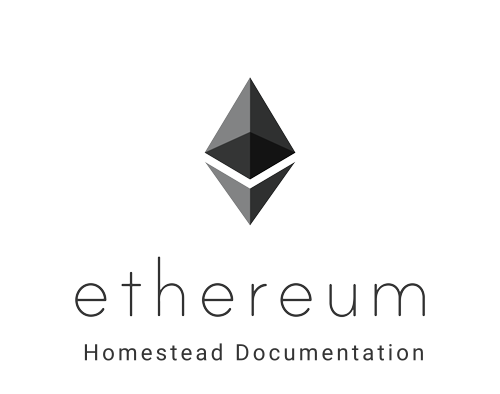

以太坊（Ethereum） Homestead 参考文档¶
这份参考文档是以太坊 社区 的志愿者们经年累月持续合作的产物。尽管还没有得到 以太坊基金会（The Ethereum Foundation） 的正式认证，我们仍然希望你发现它是很有用的，我们也衷心地欢迎新的 撰稿人（Contributors）。
这份中文版文档由 Rivers Yang 翻译制作。
目录¶
- 引言
- 以太坊客户端
- 连接到以太坊客户端
- 账户管理
- 以太币
- 以太坊网络
- 挖矿
- 合约和交易
- 常见问题
- 问题
- 什么是以太坊？
- 我听说过以太坊，但什么是Geth、Mist、Ethminer和Mix呢？
- 我如何在区块链上存储大型文件？
- 以太坊是基于比特币的么？
- 以太坊的未来是什么？
- 账户和“钱包合约”的区别是什么？
- 秘钥文件是否仅能在我下载客户端的电脑上访问？
- 下载区块链大概要花多长时间？
- 我如何获得进出一个地址的所有交易列表？
- 一个合约可以自己支付它的执行消耗么？
- 一个合约可以调用其他合约么？
- 一个交易可以进行离线签名，然后提交到在线装置上么？
- 如何获得测试网络的以太币？
- 一个交易是否可以由第三方发送？比如，将交易广播外包
- 以太坊合约可以通过第三方API来拉取数据么？
- 以太坊网络上发送的数据和合约内容是加密的么？
- 我可以在以太坊网络上存储隐私数据或者密码么？
- 以太坊如何对付那些中心化的矿池？
- 以太坊如何处理一直在增长的区块链规模？
- 以太坊如何确保提供每秒10000+的交易能力？
- 智能合约保存在哪儿？
- 你的问题依然没有得到解答？
- 问题
- 术语表
- Homestead文档计划
改进这份文档¶
请参考 Homestead文档计划 来帮助我们继续改进这份文档。